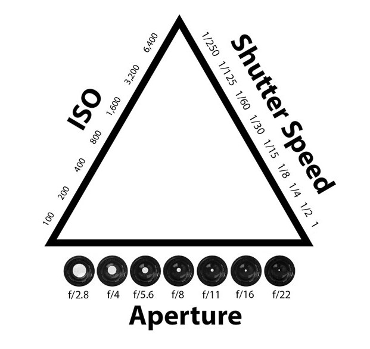
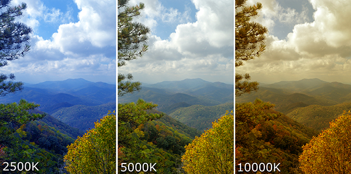
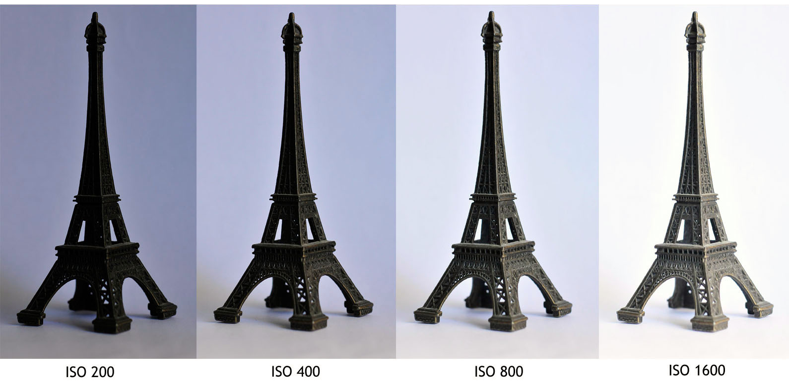
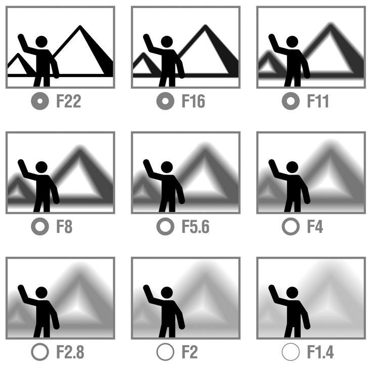
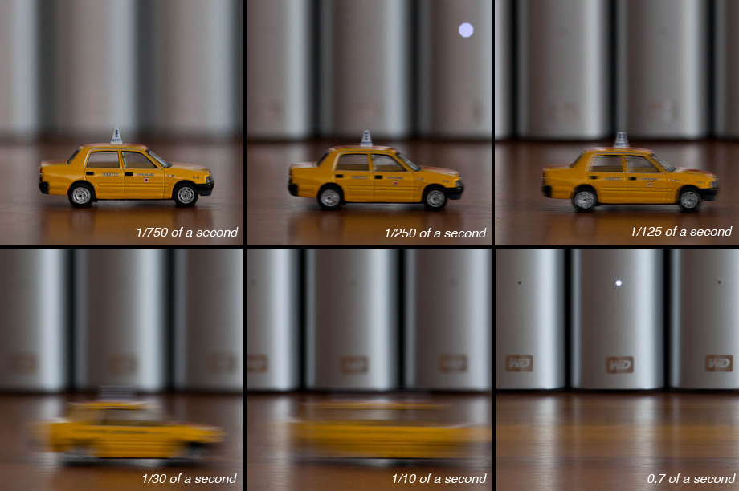

Fotografering
Når man skal lære at håndtere et kamera, er der en del hjælp at hente ved at kende til kameraets presets. Det bedste er dog at sætte sig ind i kameraets mest essentielle funktioner. Hvis man gør det, kan man tage nogle ganske fornuftige billeder af eksempelvis små motiver indendørs, hvor belysningen ofte er meget gul og afdæmpet. Hvis man ikke tilpasser kameraet til motivet og omgivelserne, så er det nærmest umuligt at få nogle gode billeder i hus. Disse indstillinger er hvidbalance og exposure-trekanten, der består af ISO, shutterspeed og aperture. Elementerne i exposure-trekanten er sammenhængende, og som hovedregel skal man kun justerer to af funktionerne og lade den ene være fast.
Hvidbalance
Hvidbalance skal justeres for at få en præcis farvegengivelse. Hvis man ikke justerer hvidbalancen, kan et billede taget i snerige omgivelser få et blåligt skær, eller hvis billedet tages indendørs, kan det få et gulligt skær. Nogle kameraer justerer selv hvidbalancen, men det er ikke altid tilstrækkeligt.
ISO
Når man justerer et kameras ISO, justerer man kameraets lysfølsomhed. Lav ISO bruges typisk i dagslys, og lav iso lukker mindre lys ind, og giver det stabile billeder. Høj ISO bruges i mørke omgivelser, og det lukker meget lys ind, men det betyder også, at det bliver svært at tage et skarpt billede, da det også opfanger meget støj.
Aperture
Aperture er en funktion, der sidder i kameralinsen, og det bestemmer mængden af lys, der kommer ind. Det angives med et f og et efterfølgende tal. Jo lavere taller er, jo mere lys lukkes ind gennem linsen. Det spiller derfor ind på et motivs dybde. Lav aperture gør det muligt at fokusere på et enkelt objekt, således at resten står uskarpt, hvilket giver megen dybde i et fotografi.
Shutter speed
Ved at have en høj lukketid er det muligt at tage billeder af ting, der bevæger sig hurtigt. Der er dog en lille hage herved. Kameraet bliver utrolig følsomt overfor selv de mindste bevægelser, når det holdes i hånden. Det er derfor nødt til at stå på et kamerastativ, da resultatet ellers vil være slørede billeder.
